样例 01碑刻残损修复

文脉立足人工智能与人文研究的交汇前沿，致力于以智能技术重新激活文化材料、历史经验与知识传统之间的内在联系。团队关注跨时代、跨媒介的人文问题，推动算法能力与人文阐释相互支撑，使人工智能不仅成为处理复杂资料的工具，也成为拓展人文学术视野、重构文化知识表达与传承方式的重要桥梁。
研究方向 01
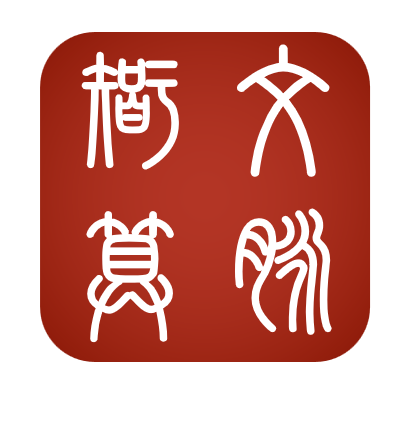
面向古籍、碑刻、拓片、摩崖等残损文献材料，研究如何在尊重原始书写结构与材料质感的前提下恢复缺失笔画、噪声区域与断裂字形。
样例 01碑刻残损修复

样例 02拓片文字重建
左右拖动，查看修复效果
研究方向 02
面向古籍、简牍、书法、碑刻、帛书、甲骨等多载体历史文献，
研究跨材料、跨时代、跨书写形态的视觉识别与文本校勘。


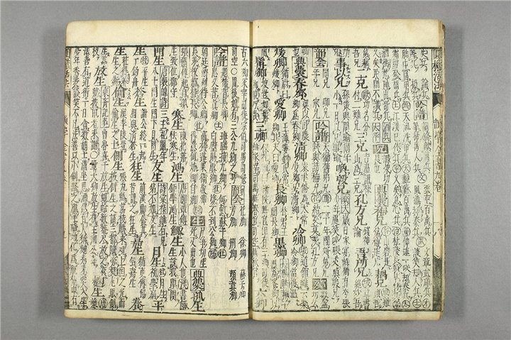

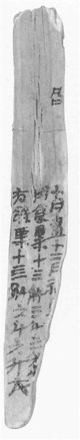
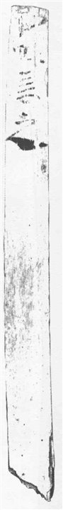

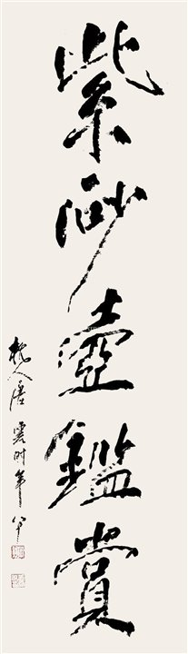
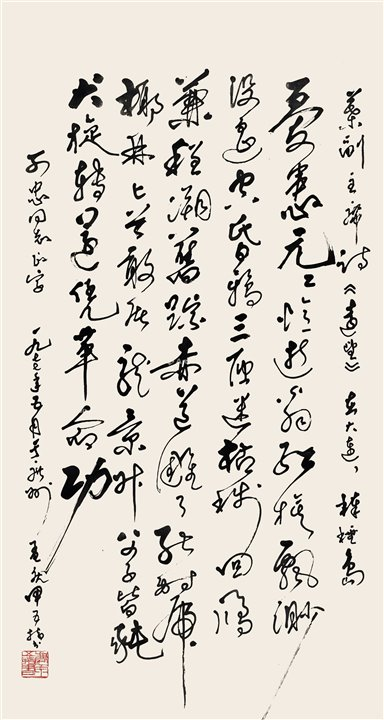
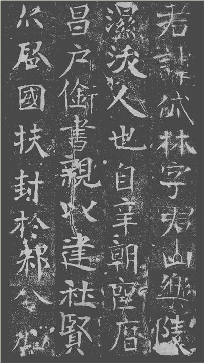
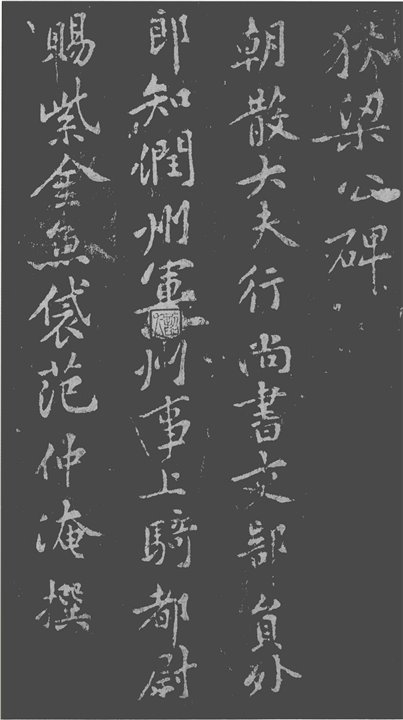
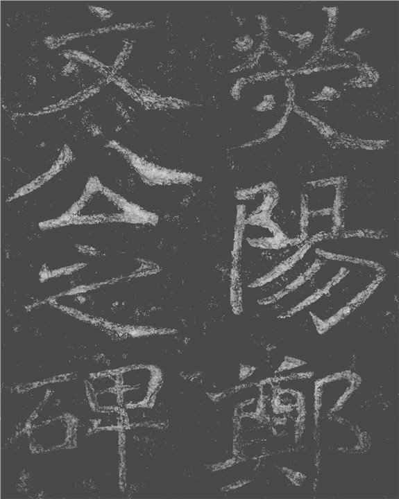
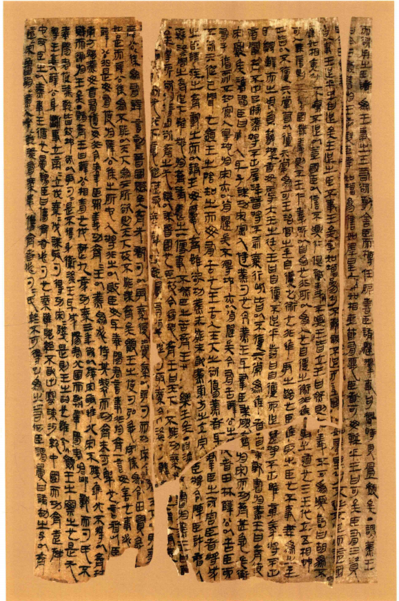
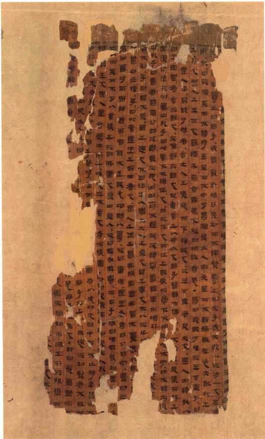
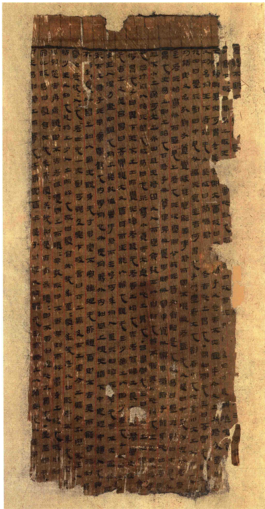
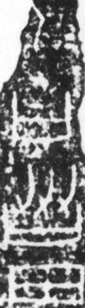
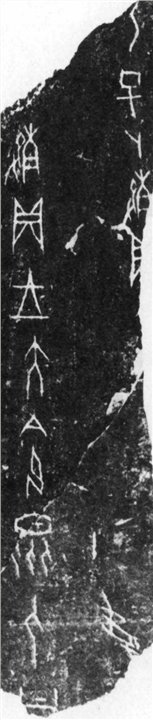
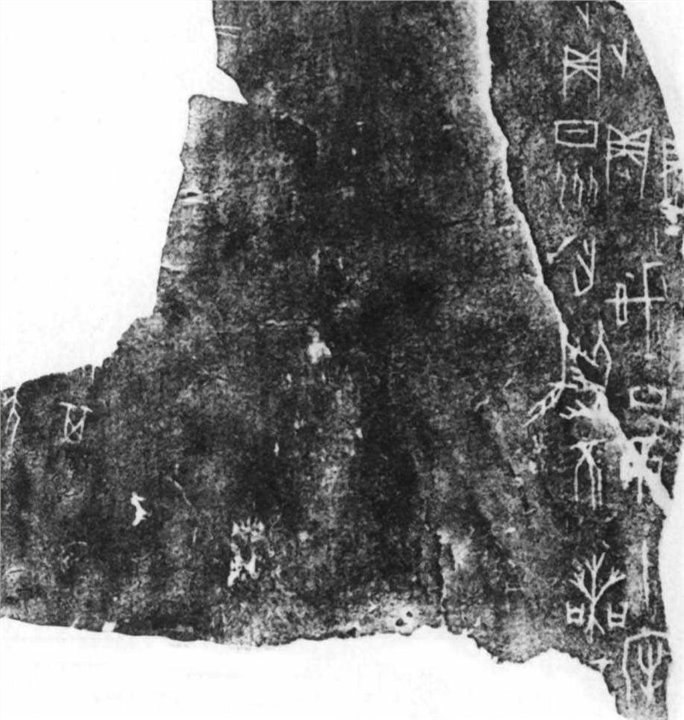
六类载体，多维度阅读
研究方向 03
面向《广韵》中多音反切字引起的继承性歧义，结合宋代
多体裁语料与大语言模型语境释义推断，研究如何确定常读音
并构建可追踪的反切主路径。
研究方向 04
聚焦历史文献与古文字材料中的字体风格迁移、字形规范化
与风格一致生成，探索在少样本和跨载体场景下保持结构可读性
与书写风格的方法。
实例整理中